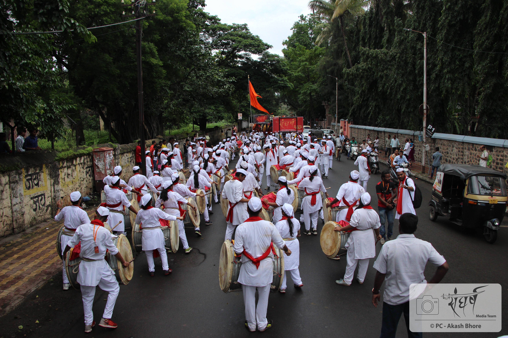
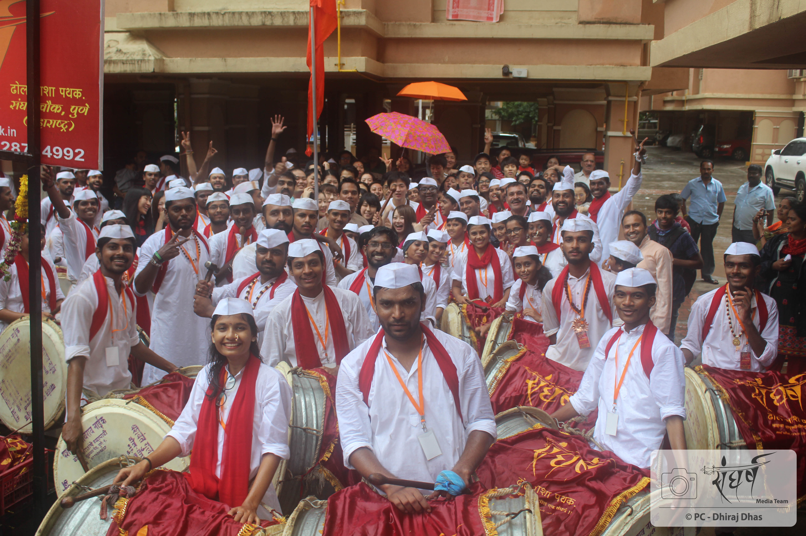
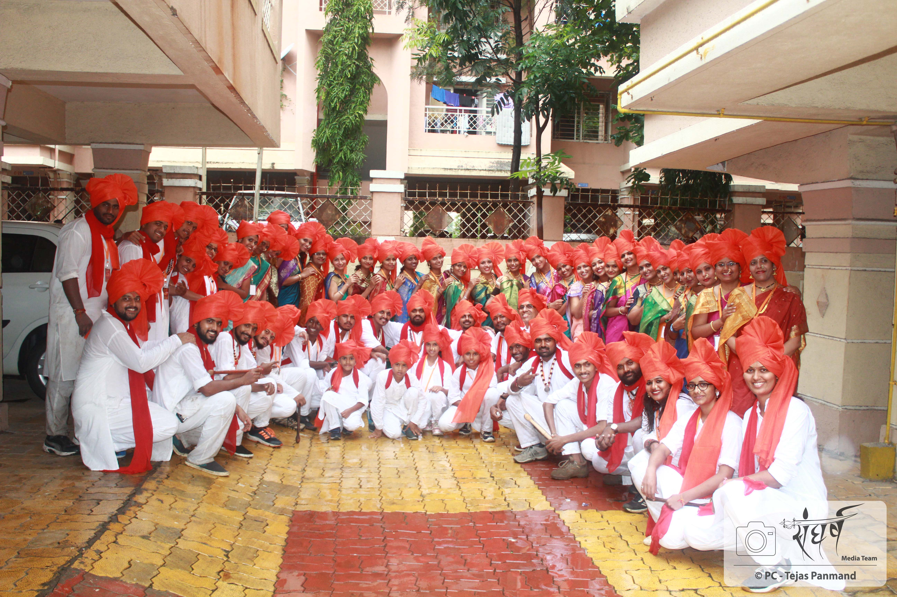
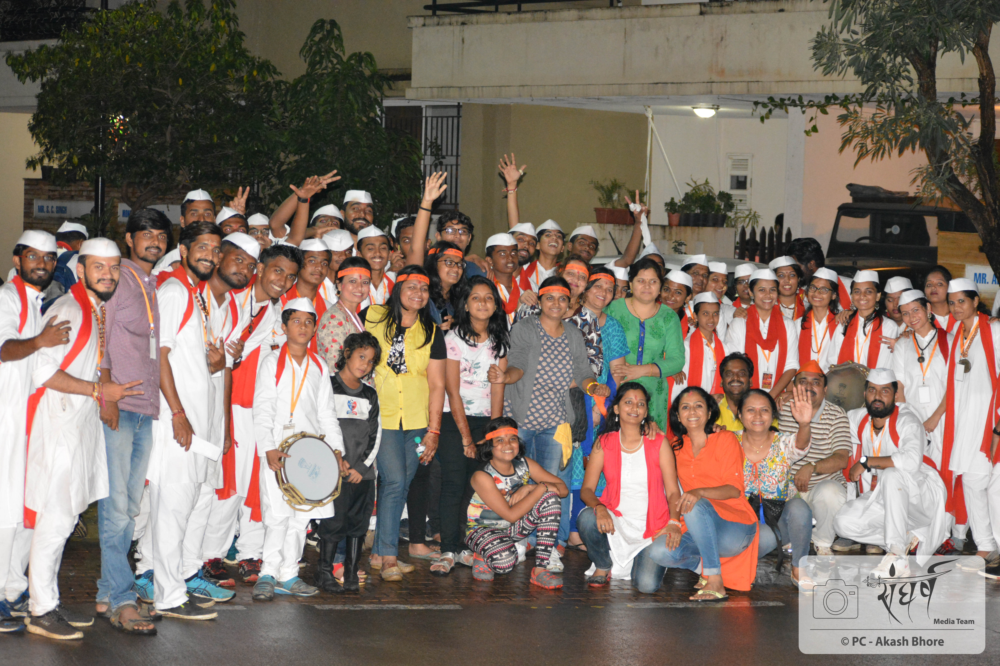
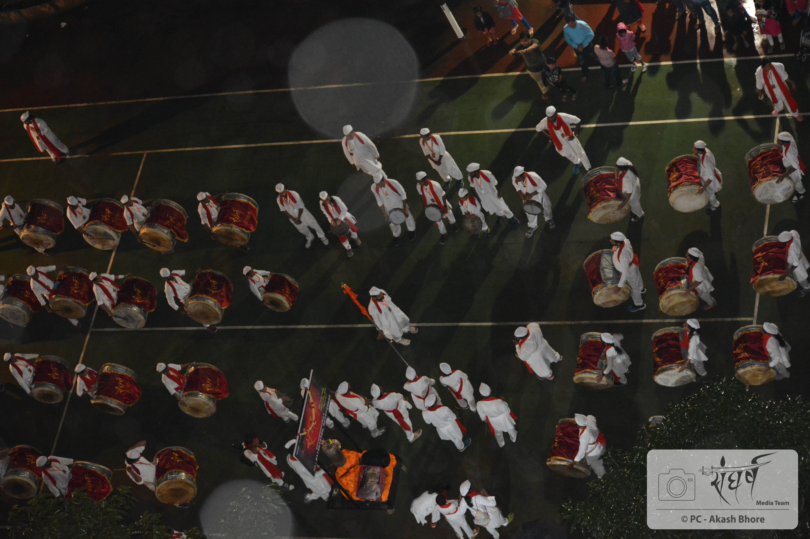

प्रवास २०१७
संघर्ष प्रवास २०१७... पथकाने परिवारातील प्रत्येक व्यक्तीस परिवाराच्या प्रगतीचे महत्त्व पटवून दिले...
"वैयक्तिक वाटा, सरळ मनाचे विचार व इतर संघातील व्यक्तीबरोबर चांगले संबंध."
ह्या प्रमाणे संघर्षच्या प्रत्येक वादकाने ही Tagline लक्षात घेऊन संघर्ष करावा.
* Individual contribution, open minded & good relationship with fellow members *



सुपारी - १ ला दिवस
१. गोखलेनगर, FC Road - २०१७ ची पहिली सुपारी. सर्वप्रथम पथकाच्या कार्यालयात वाद्यपूजन झाले. सस्मित मुखाने, उत्साहाने पांढरा पोषाख, पांढरी टोपी, लाल ओढणी आणि संघर्ष चं ओळखपत्र असा जामानिमा करून जवळ जवळ १०० वादकांचा ताफा FC Road ला दाखल झाला. जोषात वादन करायचे ह्या विचाराने सगळे जमले होते. वातावरण मस्त तयार झाले होते आणि ती पहिली सुपारी पावसाला न जुमानता आम्ही भन्नाट वाजवली.
२. पार्क स्ट्रीट सोसाईटी - Ruby Park - संघर्ष ढोल ताशा पथक शिस्तीसाठी लोकप्रिय आहे. याचे योग्य उदाहरण म्हणजे आपली पार्क स्ट्रीट ची सुपारी. गोखले नगरला ऊन पावसाच्या खेळात वादन सुरु असताना आपले काही वादक पार्क स्ट्रीटला रवाना झाले व ठरलेल्या वेळेत तेथे पोहोचले. संपूर्ण जोषात.. जणू दिवसाची सुरुवात करणार या उत्साहात वाद्यांच unloading झालं व ढोल, ताशे, ध्वज घेऊन आपले वादक सज्ज झाले. आणि अवघ्या क्षणात धमाकेदार वादन सुरू करुन बाप्पाचं स्वागत करण्यात आलं.
३. पार्क स्ट्रीट सोसाईटी - Topaz Park
४. राजवीर पॅलेस, पिंपळे सौदागर - FC Road, Park Street नंतर होती ती राजवीर पॅलेस, पिंपळे सौदागर ची सुपारी. अजिबात वेळ न दवडता आपल्या ठरल्या वेळेत संघर्षची एक तुकडी राजवीर पॅलेसला पोहोचली. पाऊस सुरू असताना, ताडपत्री ओढून, संघर्ष करीत प्रत्येक वादकाने भन्नाट वादन केले. त्यामध्ये वादनाचा दर्जा वाढवणार्या प्रतिक दादाच्या घोषणा व इंद्रजिमीचे उच्चारण... अशा स्फुर्तिदायक व आल्हाददायक वातावरणात बाप्पाचे स्वागत करण्यात आले.
५. रोज आयकॉन, Pimple Saudagar - आपल्या शशी दादाची सोसायटी... आपल्या हक्काची सोसायटी. या सोसायटी मधलं वादन म्हणजे एक वेगळं वातावरण. आपल्या सर्व ताईंनी आपल्या पारंपरिक पोषाखात... म्हणजे नववारी साड्या नेसून भन्नाट वादन केले. अगदी भारावून जाणारे दृष्य होते ते.
६. Hinjwadi


सुपारी - ५ वा दिवस
१. पार्क स्ट्रीट सोसाईटी - Ruby Park
२. Woods
३. Air Castle Marunje - गणपती बाप्पा मोरया म्हणत मिरवणुकी ला सुरवात झाली... ढोला वर ढोल त्या वर एक लहान ताशा वादक विराजमान होऊन त्याने उत्कृष्ट अशी सलामी दिली. एअर castle मध्ये फक्त Sangharsh aani फक्त Sangharsh cha ch awaj दुमदुमत होता...पार्क मध्ये संघर्ष ढोल ताशा पथकाने अतिशय उत्कृष्ट असे सादरीकरण केले.अशा या उत्साह पूर्ण वातावरणात सर्वांनी बाप्पाला निरोप दिला.
सुपारी - ७ वा दिवस
Mahadev Mandir, Rahatani
सुपारी - ८ वा दिवस
बालकल्याण - आपण ह्या समाजाच काही तरी देणं लागतो ह्या भावनेने संघर्ष ढोल ताशा पथक नेहमी काही ना काही समाज कार्यात सहभागी होतो... ह्याचाच एक भाग मणून दर वर्षी पथक बालकल्याण येथे वादन करतो... यंदाही आम्ही तिथे वादनासाठी गेलो होतो.... वादन करण्यापूर्वी बाप्पांची आरती करायची संधी वादकांना मिळाली. संपूर्ण वातावरणात खूप positivity aamhla जाणवली... त्या बालकांनी बनविलेले विविध वस्तू आम्ही पाहिल्या आणि त्यांच्या या वस्तूंचे कौतुक पूर्ण वादका नीं केले... नंतर वादना ला सुरवात झाली... नेहमी प्रमाणे इथे हे आम्ही एकदम कडकं असे वादन केले... त्या नंतर त्या बालकांना ही वादन करण्याची इच्छा झाली आणि मग ते ही आमच्या सोबत वादना साठी सामील झाले.
सुपारी - ११ वा दिवस
बिजापूर – बिजापूरची सुपारी म्हणजे मॅरेथॉन सुपारी जी 9 ते 10 तास चालते , लक्ष्मी रोड चा फील आणते. आपल्या ताईंना ढोल वाजवताना बघून तिथले लोक आश्चर्यचकित झाले. एवढा मोठा ढोल कसे बरं वाजवतात असा त्यांना प्रश्नच पडला. पोलिसांनी तर आपल्या एका दादाला विचारलंच की ढोल किती किलो चा आहे रे बाबा? एवढं जड ढोल घेऊन कसं वाजवता ते पण चेहऱ्यावर हास्य व उत्साह ठेवून? अशी अविस्मरणीय झाली बिजापूर २०१७ ची सुपारी..
सुपारी - १२ वा दिवस
१. Wakad Police Station
२. Rajveer Palace, Pimple Saudagar
Navratri Supari
Navratri Supari - Mahadev Mandir

सुपारी - Datta Jayanti 2017
Datta Jayanti 2017
Mahashivratri
Mahashivratri - Jagtap Dairy, Vishal Nagar
Shivjayanti
Shivjayanti, Goli Group, Shivaji Nagar
Swami Samarth Supari
Swami Samarth Prakat Divas Procession, Rahatani Gaon

Accenture Corporate Event
Accenture Corporate Event,Courtyard Marriott,Hinjwadi